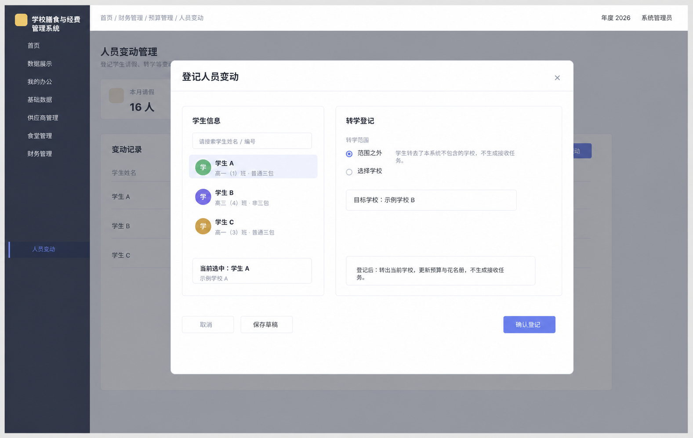
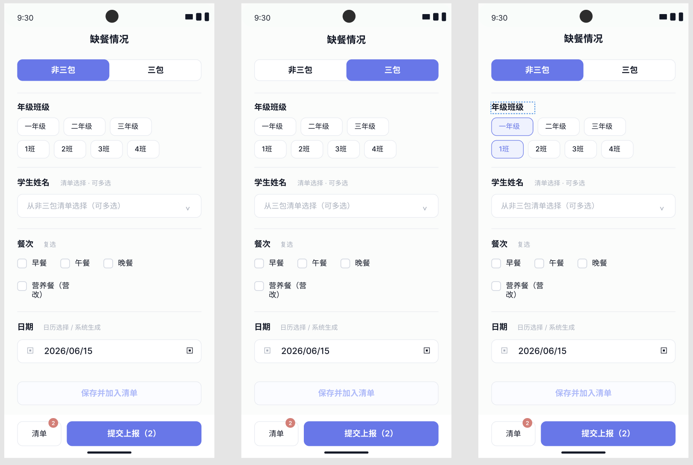
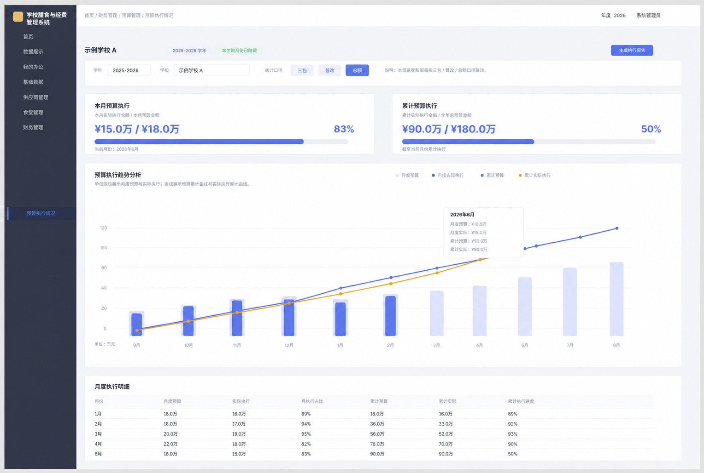
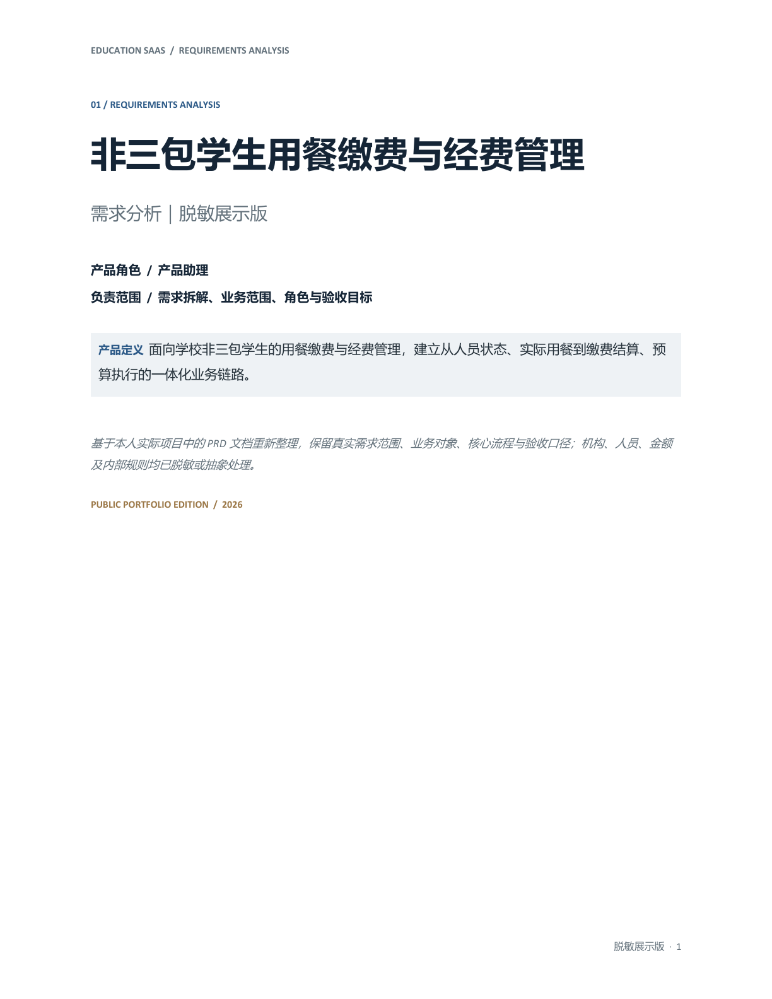
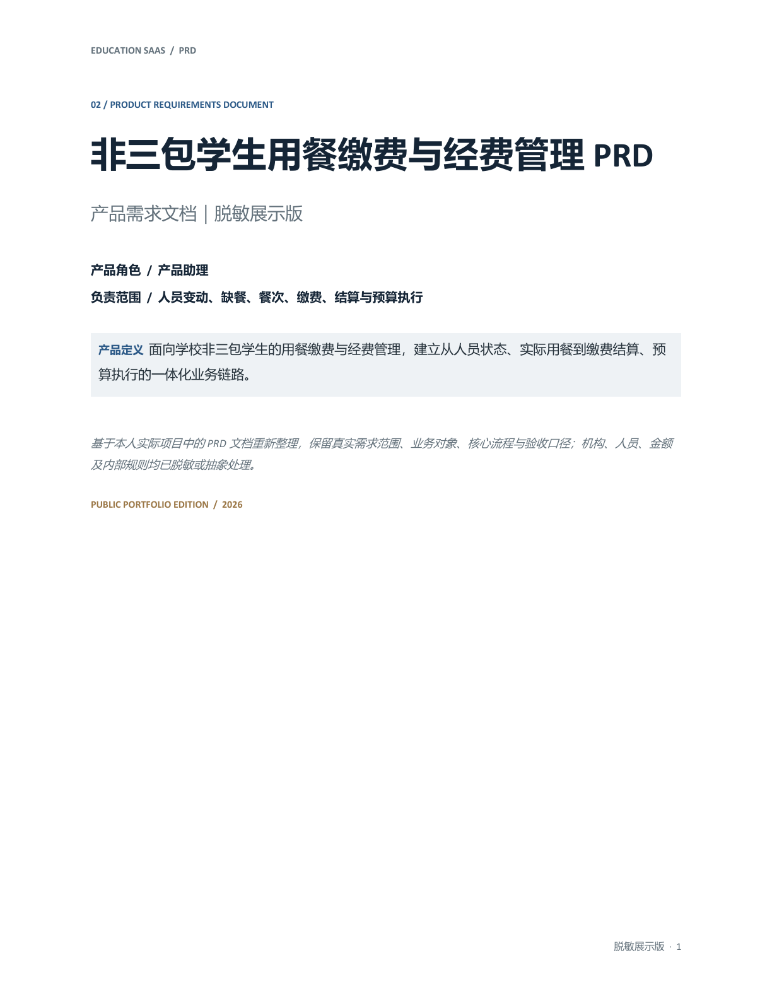
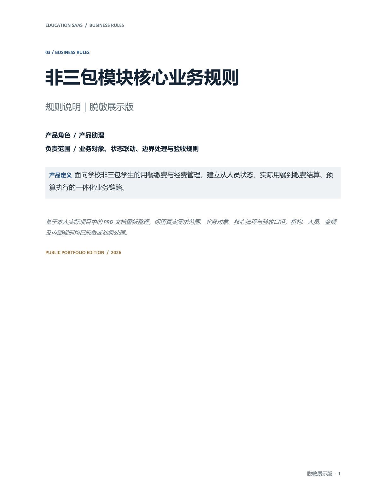

学校膳食与经费管理平台
产品所在平台连接人员、用餐、财务、预算和采购等业务。理解这些上下游关系，是设计非三包模块的前提。
CASE 03 / EDUCATION SAAS
下载简历PROJECT DOSSIER / 项目档案
面对人员、用餐、缴费和预算彼此牵连的业务，我先把“人员状态”确定为共同判断基础，再拆解它在不同角色、时间与页面中的影响。本案例只呈现实际负责的非三包模块，以及说明联动所必需的上下游关系。
产品所在平台连接人员、用餐、财务、预算和采购等业务。理解这些上下游关系，是设计非三包模块的前提。
负责需求分析、业务流程梳理、原型设计、研发沟通、功能测试与问题跟进，覆盖缴费、缺餐、人员变动、财年餐次与预算执行。
本案例仅展示实际参与流程；机构、人员、金额和内部规则均已脱敏或抽象。从操作角色、人员状态和生效时间出发，逐层明确同一次变化如何进入缴费范围、实际餐次、预算人数、食堂下单与余额结算，并为结算后变更保留复核路径。
STATE PROPAGATION / 状态联动轨迹
公开页面仅表达跨模块关系，不展示内部政策参数、金额计算公式、审批权限和真实业务判断条件。
围绕人员变动、缺餐登记与预算执行，明确谁来发起、何时生效、影响哪些数据，以及页面需要给出什么结果，让研发能够准确实现和核对。

区分流转边界，明确生效后的关联结果。

将对象、餐次与时间范围结构化。

核对月度、累计结果与执行进度。
区分系统内转学与离开系统范围，决定是否产生接收任务，以及人员状态、花名册与预算从何时开始变化。
原型截图来自实际工作过程，页面使用虚拟数据；系统名称、学校、人员、编号与示例金额已进一步替换或抽象。原始业务规则作为内部交付物存在，不在作品集中展示。
覆盖人员变动、缺餐登记、缴费管理、余额结算等核心流程。源文件仅作为工作过程证据归档，不公开内部页面与规则配置。
公开材料不追求展示大量内部页面，而是保留能够验证产品能力的关键节点：问题如何被定义、规则如何被建模、需求如何写入 PRD，以及方案是否进入真实系统。

从人员变化、缺餐、缴费与预算不同步的问题出发，明确业务对象、参与角色、负责范围与验收目标。
查看需求分析
保留产品背景、角色权限、状态模型、人员变动、缺餐、缴费结算、验收与回归口径，并加入真实系统脱敏截图作为研发实现证明。
查看脱敏 PRD
围绕对象、状态、触发、影响与验证组织规则，展示跨模块一致性、异常处理和需求追踪方法。
查看规则说明基于本人实际项目中的PRD文档重新整理，保留真实需求范围、业务对象、核心流程与验收口径；机构、人员、金额及内部规则均已脱敏或抽象处理。
选择三类最能说明研发落地的页面：人员状态、缴费入账与余额结算。登录页和预算看板因包含品牌、机构口径及内部统计信息，不进入公开作品集。
功能实现后，以转入、转出、请假和结算后变更为场景输入，逐项检查名单、账户、餐次和预算结果；发现异常后记录复现条件，提交修复，再完成复测与相邻流程回归。
TESTING LOOP / 测试验证闭环
12项与6项属于同一时间段、同一批个人负责事项；6项包含在12项之中，不作为两组独立产出相加。
让同一次人员变化，在缴费、用餐、预算与结算中，都算得清、对得上。
这段项目中，产品工作的重点是为连续发生的业务变化建立统一状态口径和生效规则，让学校管理员、班主任与财务在各自页面中读取并核对同一结果。
方案进入研发后，通过转入、转出、请假和结算后变更等场景逐项核对名单、账户、餐次与预算结果，并用复测和回归确认修复没有造成相邻流程退化。